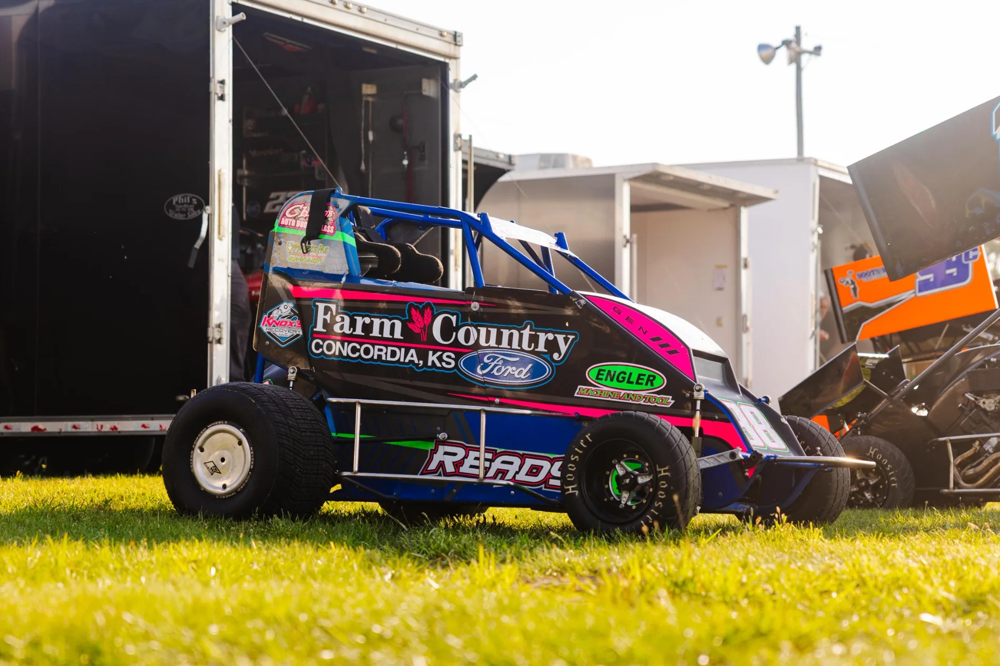

PARTNER / 01
Farm Country Ford
Automotive dealership
NO SHORTCUTS. NO LIFTING.
DIRT IN OUR BLOOD. COMPETITION IN OUR DNA.
THIS IS BO READY RACING.
BUILT IN THE SHOP. PROVEN ON THE TRACK.
Ready Racing #38 is an independent Kansas dirt track racing team competing in non-wing micro sprint racing.
For Bo Ready, racing has been a dream since childhood. After serving 10 years in the military, that dream never went away. He wanted to race, but he also wanted to make sure the money was right.
Then one day, he woke up and decided: “I'm buying a race car today.”
The original plan was an IMCA Modified. Bo found the car he wanted and was getting his finances lined up when it was sold to someone else. Instead of abandoning the dream, he went in a completely different direction — non-wing micro sprints. Ready Racing #38 was born.
Today, it's about long nights in the shop, learning with every lap, and showing up ready to compete. Family, friends, supporters, sponsors, and the racing community help keep that dream moving forward.
MEET THE PEOPLE WHO POWER US ↗
THE MACHINE / NO. 38NO PERFECT CONDITIONS. NO EASY LAPS.
CHASE THE LINE. EARN EVERY INCH.
02 / INSIDE READY RACING #38
The dirt. The speed. The moments in between. A look inside Kansas non-wing micro sprint racing.
MORE THAN A LOGO. PART OF THE TEAM.Every partner helps fuel the dream. Together, we’re building something bigger than what happens on the track.
Automotive dealership
Electrical services
Performance racing components
Auto body and glass
Vehicle recovery
Engineering services
Graphics and design
Trucking and hauling
Photography and video coverage of the #38, from race-night action to moments behind the scenes.
NO REPLAY DOES IT JUSTICE.The speed. The dirt. The adrenaline. Get closer to the action with Bo Ready Racing #38.
 SHORTS
SHORTS SHORTS
SHORTS SHORTS
SHORTS SHORTS
SHORTS SHORTS
SHORTS SHORTS
SHORTS SHORTS
SHORTS SHORTS
SHORTS SHORTS
SHORTS SHORTS
SHORTS SHORTS
SHORTSFOLLOW THE 2027 SEASON
THE NEXT CHAPTER STARTS AT THE GREEN FLAG.A new season. New challenges. The same determination. Follow the #38 as the 2027 racing schedule comes together. Dates are posted when confirmed.
Loading the race schedule…
YOUR BRAND. OUR DRIVE.
YOUR BRAND. OUR DRIVE. ONE TEAM.Put your business in front of racing fans through trackside exposure, social media promotion, race-weekend content, and partnership opportunities built around your goals.
START A SPONSOR CONVERSATION ↗Prefer to talk first? Reach the team on the official Bo Ready Racing social channels.
EXPLORE ALL PARTNER BENEFITS ↗